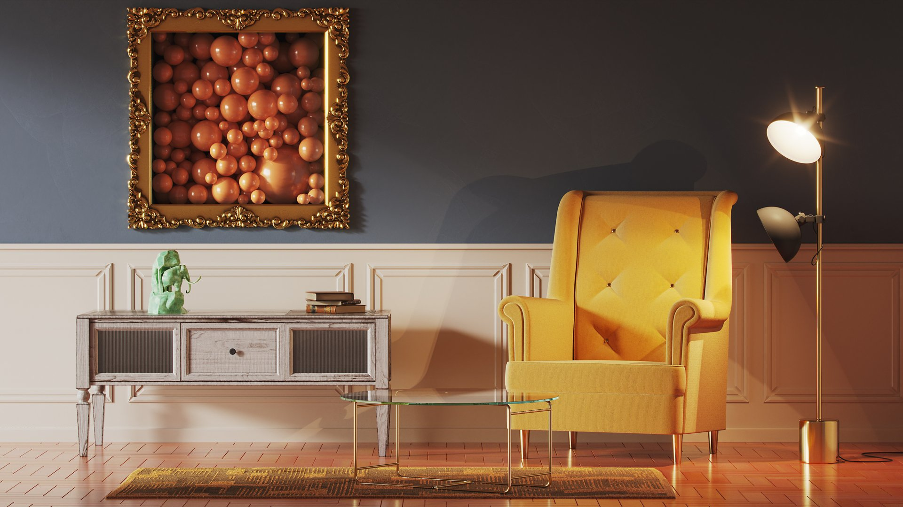
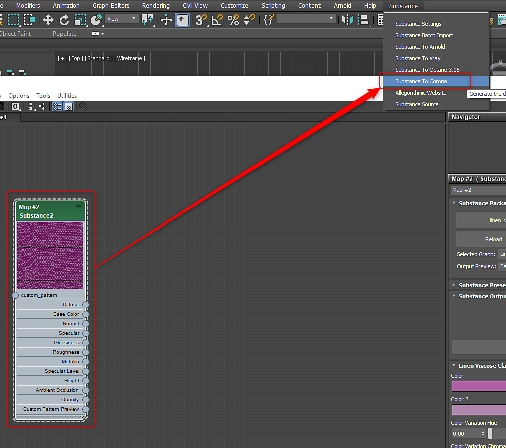

Corona for 3ds Max
Substance in Maya Plugin

Corona 1.6 - 6
Using the 3ds Max plugin, you can choose Corona in the Substance menu to automatically setup the Corona material with Substance texture inputs.

Corona 7 - 9
For Corona render 7 and above, selecting "Substance to Corona" with the Substance2 node selected will create a network for the Corona Physical Material.

- LiftGamaGain is created between the Base Color output and Base color input. A Gamma value of 0.455 is used to correct color difference.
- CoronaNormal is created between the Normal output and Base bump input, and also between the Coat Normal output and Clearcoat Bump input. No settings are changed, but modifications for normal can be made here.
- CoronaMix is created between the Sheen Color output and Sheen color input. A Mix Amount of 0 is set and a multiplier of 2 is set for the Base Layer. Users can adjust the Mix Amount value to control sheen.